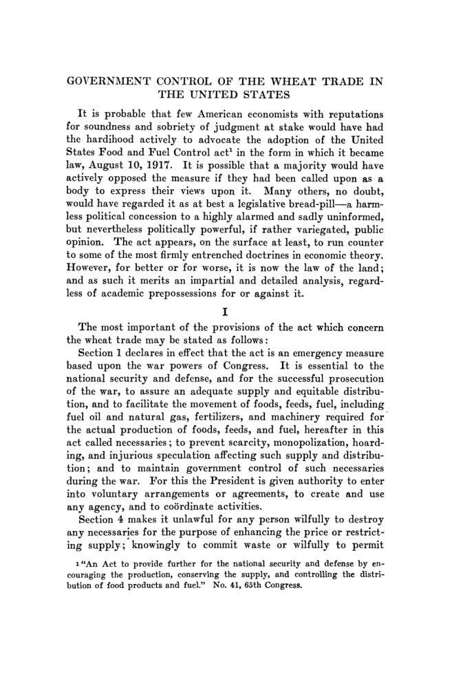

Duffus e o controle federal do trigo em 1917
Leitura: 9 min
William M. Duffus examina a lei de alimentos e combustíveis de 1917: as condições que a tornaram possível, os nove poderes que deu ao governo sobre o trigo e a teoria por trás de cada um.


Em 14 de maio de 1917, o contrato de trigo para entrega em maio valia US$ 3,25 por bushel na Bolsa de Chicago, e os moinhos pagavam US$ 3,45 pelo grão disponível. Quem vendera a descoberto não conseguia cobrir as posições. Os diretores da bolsa proibiram novas operações naquele contrato, exceto para liquidar as existentes, e fixaram o preço máximo de liquidação em US$ 3,18; logo depois suspenderam as compras especulativas nos contratos de julho e setembro.
A cena está no meio de um longo artigo de William M. Duffus, da University of Kansas, na American Economic Review de março de 1918. O tema é a lei de controle de alimentos e combustíveis, sancionada em 10 de agosto de 1917. Duffus abre com uma observação sobre a própria profissão: poucos economistas com reputação de sobriedade teriam defendido a lei tal como foi aprovada, e talvez a maioria a tivesse combatido. Mas a lei estava em vigor e, por isso, merecia análise imparcial.
O que a lei autorizava?
A lei se declara medida de emergência, apoiada nos poderes de guerra do Congresso, para assegurar oferta e distribuição equitativa de alimentos, rações, combustíveis, fertilizantes e máquinas, chamados de “necessários”. Proíbe destruir estoques para elevar preços, desperdiçar, açambarcar, monopolizar e cobrar preços excessivos. Permite ao presidente licenciar a importação, a fabricação, a armazenagem e a distribuição, com isenção para agricultores, cooperativas, transportadores e varejistas com vendas anuais até US$ 100 mil.
Outras seções autorizam a apreensão e venda de estoques açambarcados, a requisição de mercadorias para o Exército e a Marinha, a compra e venda de trigo, farinha, feijão e batata a preços razoáveis, a requisição e operação de fábricas e frigoríficos e a regulação ou proibição de operações nas bolsas. A seção 26 repete parte das proibições para quem atua no comércio interestadual e prevê multa de até US$ 5 mil ou dois anos de prisão. Duffus supõe que a repetição sirva para apoiar a lei também no poder de regular o comércio.
Por que a lei passou?
Duffus enumera oito condições. A guerra fora declarada em 6 de abril de 1917, sem previsão de fim. A safra de 1916 fora curta e a de 1917 prometia sê-lo: a de 1915 passara de um bilhão de bushels, a de 1916 ficou perto de 640 milhões, e as condições do trigo de inverno em abril de 1917 foram as piores já registradas para o mês. A demanda europeia era grande. Hoover, em discurso de 20 de maio, falou em setenta milhões de homens retirados do trabalho produtivo na Europa.
Os preços subiam. Segundo o Bureau of Labor Statistics, os preços de varejo dos principais alimentos aumentaram em média 48% entre abril de 1913 e abril de 1917; no mês encerrado em 16 de abril de 1917, subiram 9%, a maior alta mensal desde o início da guerra europeia. Os consumidores, observa Duffus, raciocinam como teóricos do custo original de produção quando discutem preço justo e não aceitam que preços altos sejam o meio adequado de conter o consumo em tempo de escassez.
Os agricultores hesitavam em plantar mais. Um produtor do Missouri, em artigo citado por Duffus, lembrava que em julho e agosto de 1914 vendera trigo a 62 centavos e temia a volta desses preços se a área plantada crescesse; uma garantia de US$ 1,50 por bushel, dizia, faria mais pela expansão do plantio do que toda a propaganda oficial. Organizações como a American Society of Equity e a Non-Partisan League da Dakota do Norte pediam preços máximos e mínimos, o fim da especulação em bolsa e a tomada de elevadores e frigoríficos pelo governo.
As duas últimas condições vinham de fora e de cima. Todos os países europeus haviam adotado algum controle de alimentos, e a Food Administration divulgou em 8 de julho de 1917 preços oficiais do trigo de US$ 1,80 por bushel na Grã-Bretanha e na França, US$ 1,14 na Austrália e US$ 1,35 na Índia, quando o trigo disponível em Chicago passava de US$ 2,10. O público concluiu que a diferença se devia à ganância dos especuladores. E o governo de Wilson pediu a lei.
Que teoria sustentava cada poder?
Duffus divide os poderes em nove grupos. Punir desperdício, destruição e monopólio repetia princípios já presentes nas leis estaduais e federais; a vantagem era o efeito moral e uma máquina administrativa que atravessava fronteiras estaduais. A proibição do açambarcamento vinha de um memorando do Departamento de Agricultura: o medo da escassez leva consumidores a estocar, e o medo comercializado leva especuladores a fazer o mesmo.
A autoridade para comprar, armazenar e vender alimentos fora recomendada pelo secretário Houston ao Senado em 18 de abril de 1917, com base numa conferência de representantes agrícolas de 32 estados em St. Louis. Hoover a defendia por outro motivo. Segundo ele, o governo francês importava cerca de 25% do pão que consumia e usava essa posição como alavanca para sustentar o preço máximo.
“Em todas as mercadorias em que não há alavanca desse tipo, o preço máximo é um fracasso total.” (“in all commodities where there is no club of that character the maximum price is a total failure”)
O poder de requisitar e operar fábricas aparece, no memorando do Departamento, como meio de estimular a produção; para Hoover, como incentivo à cooperação voluntária, capaz de levar os 5% de comerciantes relutantes a acompanhar os 95% dispostos a cooperar. O controle das bolsas foi justificado pelo risco de manipulação com margens pequenas, mas Duffus registra que o argumento não explicava a diferença entre especulação “prejudicial” e os “muitos serviços úteis” das bolsas, e que Houston preferia ter mais fatos antes de opinar.
Preço fixo, máximo ou mínimo?
Hoover negava o papel dos preços altos como conservadores de estoques escassos: reduzem o consumo, mas à custa dos mais pobres, e os salários sobem devagar e de forma desigual, o que abre caminho a greves e desordem. Citava o prefeito de Paris, para quem a cidade tinha pão para quatro dias e, sem ele no quinto, a guerra terminaria. Afirmava ainda que o pão era 60%, 40% e 30% mais barato na Bélgica, na França e na Inglaterra que nos Estados Unidos.
A economia, para Hoover, viria da exclusão dos lucros especulativos, não do sacrifício do produtor: a farinha poderia cair de US$ 14 ou mais por barril para US$ 9, poupando ao público US$ 50 milhões por mês. Duffus nota que Hoover toma como preço justo o preço normal dos teóricos do custo de produção e não inclui nenhum lucro especulativo entre os lucros necessários. Daí sua preferência pela fórmula que diz ter restado da experiência europeia: um preço fixo para cada etapa, do grão ao produto final, baseado no custo e em retorno razoável do capital.
A garantia de US$ 2 para a safra de 1918, acrescentada ao projeto original, é para Duffus uma das partes menos vulneráveis da lei: quase ninguém duvidou de sua eficácia como estímulo, salvo quebra de safra. As dúvidas eram outras: se o estímulo era necessário, se o valor era adequado e se cabia ao Congresso fixá-lo. O licenciamento de comerciantes, por fim, é tratado como instrumento administrativo, com problemas mais políticos que econômicos.
Na minha leitura
Na minha leitura, o método de Duffus é o mais útil do artigo. Em vez de julgar a lei pelo conjunto, ele a decompõe em poderes e pergunta, para cada um, qual argumento econômico o sustenta e de onde ele veio: do Departamento de Agricultura, de Hoover, das organizações de agricultores ou da pressão dos consumidores. O resultado mostra que a mesma lei reúne medidas de natureza muito diferente, desde a repetição de normas antigas até a substituição do mercado por preços administrados.
O ponto econômico central é a distinção que Hoover faz entre preço máximo e preço fixo com controle de estoque. Um teto sem capacidade de compra e venda tende a desviar a mercadoria do mercado normal; um preço administrado exige que o governo detenha parte da oferta. É a mesma questão, em linguagem de 1917, que separa controles de preço eficazes de controles apenas declarados.
Glossário
- Contrato futuro
- compromisso negociado em bolsa de comprar ou vender trigo numa data futura a preço fixado hoje.
- Venda a descoberto
- venda de contrato futuro sem possuir a mercadoria, na expectativa de recomprá-la mais barato.
- Açambarcamento
- retenção de estoques além das necessidades normais para lucrar com a alta de preços.
- Licenciamento de mercadorias
- exigência de licença federal para importar, fabricar, armazenar ou distribuir os bens controlados.
- Preço máximo
- teto legal ao preço de venda, sem que o governo compre ou venda a mercadoria.
- Preço fixo
- preço determinado para cada etapa da cadeia, do produtor ao consumidor, com base no custo de produção.
- Bushel
- medida de volume de grãos usada nos Estados Unidos, cerca de 27 kg no caso do trigo.
Fontes
- Government Control of the Wheat Trade in the United States — William M. Duffus (University of Kansas) (pp. 62–87). JSTOR · Internet Archive (PDF)
- Edição completa, com os demais artigos: Nº 150 do Arquivo.
Documento em domínio público (EUA, publicado antes de 1931), via JSTOR Early Journal Content e Internet Archive. Resumo e comentário do autor deste site, sem afiliação com a American Economic Association. Encontrou um erro? Escreva: a correção é publicada no próprio texto, com data.
↑ Nº 150 · O mercado da Califórnia, o trigo de Hoover e a fábula de Mandeville Patten, Mandeville e os títulos de guerra →